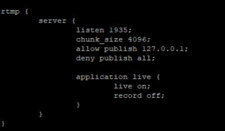
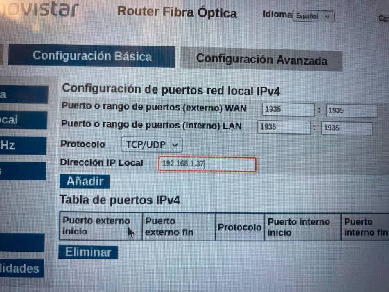
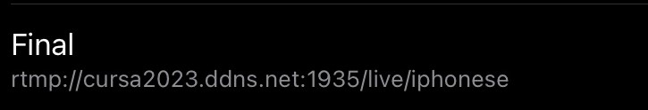
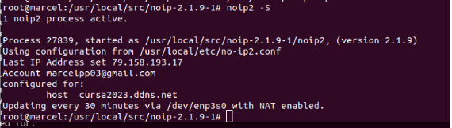
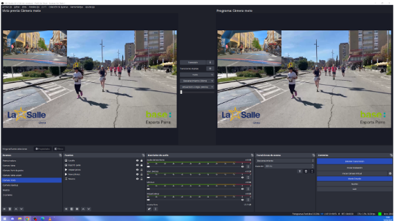
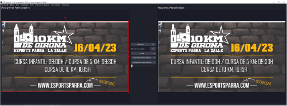

Per fer el meu servidor RTMP vaig optar per instal·lar un ubuntu server i en ell instal·lar-li Nginx i a l'arxiu "/etc/nginx/nginx.conf" aplicar-li una configuració que escolti el port 1935:
També vaig fer un port-forwarding al meu router que fes que jo sense necessitat d'estar a la mateixa xarxa envies senyal al port 1935 i ell el transformes:
Vaig instal·lar un servei No-IP que em permetres tenir un subdomini allotjat i a la configuració del Larix Broadcaster no posar la meva IP pública ja que al tenir una IP dinàmica no em canvies i no reves senyal:
Per iniciar el servei ho faig a través de les següents comandes "/usr/local/bin/noip2" i "Noip2 -S" m'ensenya els serveis No-IP que estan actius:
Per últim vaig aprendre com funcionava OBS per poder retransmetre la cursa dels 10km de La Salle a Youtube, vaig crear dos tipus d'escenes, la primera es l'imatge de la camera i els logos de La Salle i Esports Parra i la segona pasa els patrocinadors de la cursa, aquesta la feiem passar en el temps de descans entre cursa i cursa:
 